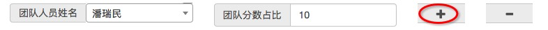

操作手册
系统登录
请在规定的时间内使用firefox或chrome浏览器登录系统，登录地址详见通知。
用户名密码为姓名全拼，比如教师张三的用户名为：zhangsan，默认密码为mengyunzhi。2019年新入职教师请将姓名以及所在系发送至`3792535@qq.com(实时接收)`，我们将在1个工作日内完成新用户的注册并邮件反馈注册结果。
注意： 请在提示的规定时间内登录系统。
修改密码
登录成功后可由个人中心进行密码的修改.
找回密码
系统没有找回密码功能（密码实际上存储的为加密后的值，该算法不可逆），故有忘记密码的老师请使用您在学院登录的邮件以"重置密码"为标题，发送您的姓名、手机号至`3792535@qq.com`，我们将在1个工作日内完成密码的重置，并将重置后的密码以电子邮件的形式反馈给您。
业绩管理
由本系统进行管理的业绩有：教科研、教学建设、学科与平台建设、科研奖励，共计4个子项。我们以教科研业绩为例，对操作方法进行简单的说明.
业绩录入

选择项目
选择项目支持快速定位，比如我们要添加在《学报》上发表的论文，则可以直接输入论文关键字来快速定位。
选择完具体的项目，系统根据项目类型弹出其它输入项，比如我们选择了在《学报》上发表的论文..，则需要添加名称、选择发表时间、添加发表位置。
由于在《学报》上发表的论文..属于团队项目，支持多人共同分享分值，所以系统将对应弹出：
如果该项目为自己单独完成，则该项可忽略不填写，或是将团队人员选择（同样支持快速定位）为自己，团队占比值输入非0正值。
如果该项目为团队开发，则应该点击右侧的
+来添加所有的团队人员。

比如在某个论文中，潘瑞民、付强、郭奇三位教师共同完成，团队分数占比（权重）分别为10，20，15，则三位教师的得分方法为：个人权重 项目分值 / 总权重。假设该项分值为90分，则上述三位教师的分值分别为：10 90 / 45 = 20分；40分；30分。
注意： 如果该项目自己也属于团队成员之一，一定不要忘记添加自己并设置对应的权重，否则系统会自动认为当前登录用户只是该项目的录入者，并未参与实现的项目。
- 选择对应的审核流程及审核人
最后点击提交按钮进行项目的提交，提交完成后该流程将送至审核人员处。请联系审核人员进行审核。
流程查看
在流程审核过程中，提交用户可以查看申请流程的当前办理人及办理意见、分值等信息。
审核申请（系主任、教学科研秘书）
当有新流程提交时将会首先出现在 我的工作 -> 待办工作 菜单中。
点击查看按钮进入该流程，并按实际情况进行填写。
- 流程没有问题的，输入审核意见后，选择"同意"，选择下一审核人后点击完成。
- 流程存在问题的，输入审核意见后，选择"退回申请人"后点击完成，流程将送回申请人。
申请人对退回的申请可以进行修改后重新提交
在办工作
在待办工作中查看某个工作后没有给出具体意见的流程将进行 在办工作 菜单。
已办工作
历史审核过的工作将出现在已办工作中。
流程办结
流程办结并确认后，在业绩列表中进行查看，待/在办人项将显示为已办结，并在分值处显示对应的分值。
写在最后
原则上该系统支持IE+、firefox及chrome浏览，但系统仅针对firefox进行了测试。故仅推荐使用firefox浏览器，当在其它的浏览器使用时发现问题时，请尝试切换至firefox浏览器。
在使用过程中如遇到系统问题。请将相关问题发送至3792535@qq.com，请尽量配合相应的截图，这样有助于我们快速的找到问题并做出及时的响应。
在使用过程中如遇到非系统问题，请咨询相应的教学、科研秘书或相关领导。
系统未预留任何修改数据的接口，如果您在使用的过程中不小心录错了数据，请将原流程删除然后重新提交一个。
做为系统的开发者，我深知该系统仍然存在众多的问题，对此我深表歉意。